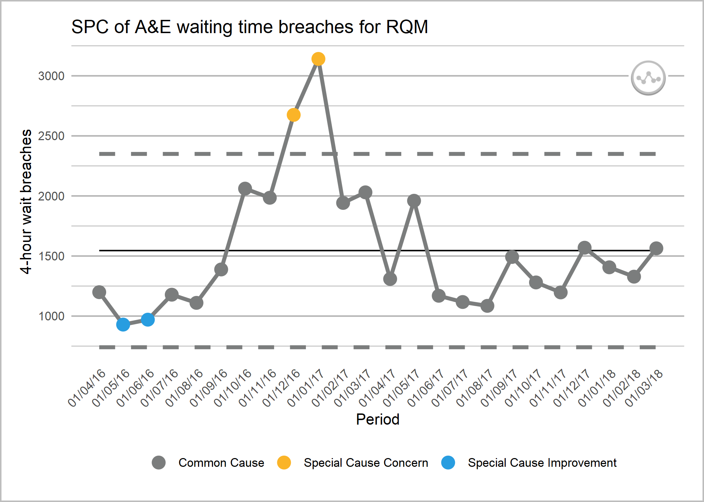

This package is built by the NHS-R community to provide tools for drawing statistical process control (SPC) charts. This package supports the NHSE/I programme ‘Making Data Count’, and allows users to draw XmR charts, use change points, and apply rules with summary indicators for when rules are breached.
Please be aware that this package is in the early stages of development, and features may change.
Installation
As the package develops there will be a full release to CRAN if possible, but until that time you can install from GitHub using the remotes package with:
# install.packages("remotes")
remotes::install_github("https://github.com/nhs-r-community/NHSRplotthedots", build_vignettes = TRUE)Overview
Welcome to the NHS-R community’s collaborative package for building a specific type of statistical process control (SPC) chart, the XmR chart. We are aiming to support the NHS England and NHS Improvement’s ‘Making Data Count’ programme, please see here for more details. The programme encourages boards, managers, and analyst teams to present data in ways that show change over time, and drive better understanding of indicators than ‘RAG’ (red, amber, green) rated board reports often present.
The help-files, and vignette within this package tell you more about the possible options for controlling the charts, but below is a simple example of the type of chart the package produces. We will use the ae_attendances dataset from the NHSRdatasets package and a bit of tidyverse dplyr code to select some organisations.
library(NHSRplotthedots)
library(NHSRdatasets)
library(tidyverse)
sub_set <-
ae_attendances %>%
filter(org_code == 'RQM' & type ==1 & period < as.Date('2018-04-01'))
ptd_spc(sub_set, value_field = "breaches", date_field = "period",
improvement_direction = "decrease")
This plot is ok on it’s own, but we can specify more control options when we pass it on, using the dplyr pipe function below: %>% to the plot argument.
ptd_spc(sub_set, value_field = "breaches", date_field = "period",
improvement_direction = "decrease") %>%
plot(y_axis_label = "4-hour wait breaches"
, main_title = "SPC of A&E waiting time breaches for RQM")
or alternatively:
ptd_spc(sub_set, value_field = "breaches", date_field = "period",
improvement_direction = "decrease") %>%
ptd_create_ggplot(y_axis_label = "4-hour wait breaches"
, main_title = "SPC of A&E waiting time breaches for RQM")Contribution
This is an NHS-R Community project that is open for anyone to contribute to in any way that they are able. If you want to learn more about this please join the discussion at the NHS-R Community Slack group and the specific channel # proj-shiny-spc.